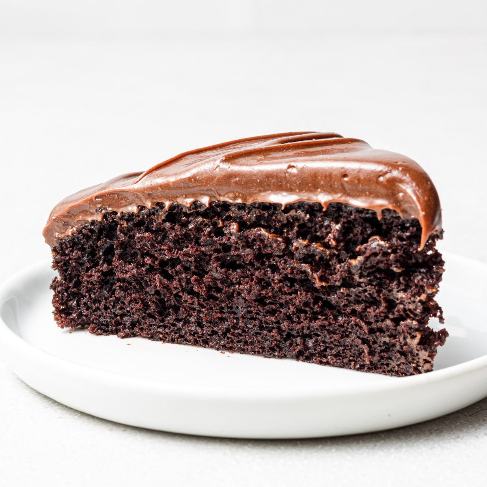
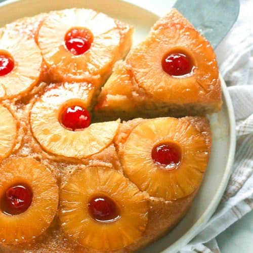
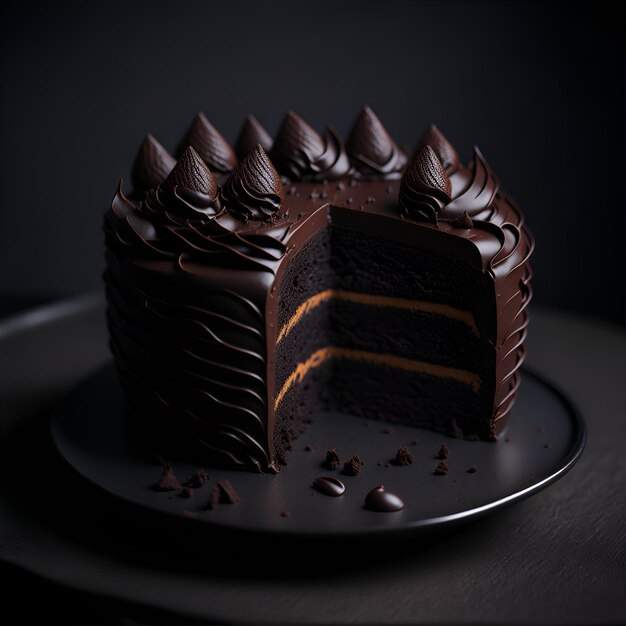

Blissful Bites
close
Home
Services
Testimonials
CheckOut
Testimonials
Fresh Berry Vanilla Cake
"The Fresh Berry Vanilla Cake from Blissful Bites is a delightful combination of flavors. The freshness of the berries and the lightness of the vanilla cream make it a perfect treat for any occasion." - Sarah M.

Chocolate Fudge Cake
Chocolate Fudge Cake is a chocolate lover's dream. The rich and decadent flavor combined with the smooth chocolate frosting is simply irresistible. Highly recommended for all chocolate enthusiasts!" - Michael R.
Red Velvet Cake
"The Red Velvet Cake from Blissful Bites is a classic with a twist. The hint of cocoa and the creamy cream cheese frosting make it a standout dessert. It's a must-try for anyone who appreciates a good red velvet cake." - Emily K.
Coffee Cake
Coffee Cake is the perfect companion to a cup of coffee or tea. The moist and flavorful coffee-infused cake with the cinnamon streusel topping is a delightful indulgence for any coffee lover." - David S.

Pineapple Cake
"The Pineapple Cake from Blissful Bites is a tropical delight. The light and airy pineapple-flavored cake with layers of pineapple filling and creamy pineapple frosting is a refreshing treat for any pineapple enthusiast." - Olivia T.

Dark Chocolate Cake
Dark Chocolate Cake is a true indulgence for chocolate connoisseurs. The intense and rich chocolate flavor combined with the velvety dark chocolate frosting is a decadent delight for the senses." - William L.
References
A Couple Cooks. (2021, May 31). Shrimp Pesto Pasta. A Couple Cooks. Retrieved from https://www.acouplecooks.com/shrimp-pesto-pasta/
Adam and Joanne of Inspired Taste. (2323, July 26). Easy Weeknight Spaghetti and Meat Sauce. Retrieved from https://www.inspiredtaste.net/38940/spaghetti-with-meat-sauce-recipe/
Bites, I. (2023, October). African Bites. Retrieved from https://www.africanbites.com/pineapple-upside-down-cake/
Cooks, J. (2022). Jo Cooks. Retrieved from https://www.jocooks.com/recipes/creamy-carbonara/
Coupland, J. (2019). Tittle Sugar Snaps. Coffee cake. Retrieved from https://www.littlesugarsnaps.com/triple-layer-coffee-cake/
Four Points Trading Co. (2023, December 12). Hazelnut Coffee Candle. Retrieved from https://fourpointstradingco.com/products/hazelnut-coffee
Freepik. (n.d.). Dark chocolate cake with decoration on top dripping with chocolate [Digital image]. Retrieved from https://www.freepik.com/premium-ai-image/dark-chocolate-cake-with-decoration-top-dripping-chocolate_54560035.htm.
Melim, S. (2022, June 16). Girl With The Iron Cast Retrieved from https://girlwiththeironcast.com/creamy-pesto-pasta/
Schwartz. (n.d.). Garlic Italian Carbonara. Retrieved from https://www.schwartz.co.uk/recipes/pasta-rice-and-noodles/garlic-italian-carbonara.
Sugar Geek Show. (n.d.). Doctored Red Velvet Cake Mix Recipe. Retrieved from https://sugargeekshow.com/recipe/cake/doctored-red-velvet-cake-mix/
Sugar, Lindsay. (2021, June 16). Fresh Berry Vanilla Layered Cake. Life, Love, and Sugar. Retrieved from https://www.lifeloveandsugar.com/fresh-berry-vanilla-layered-cake/
The Cookie Dough Diaries. (n.d.). Chocolate Fudge Cake. The Cookie Dough Diaries. Retrieved from https://thecookiedoughdiaries.com/chocolate-fudge-cake/
Vikings Philippines. (n.d.). My Carbonara. Vikings Philippines Delivery. Retrieved from https://delivery.vikings.ph/products/my-carbonara